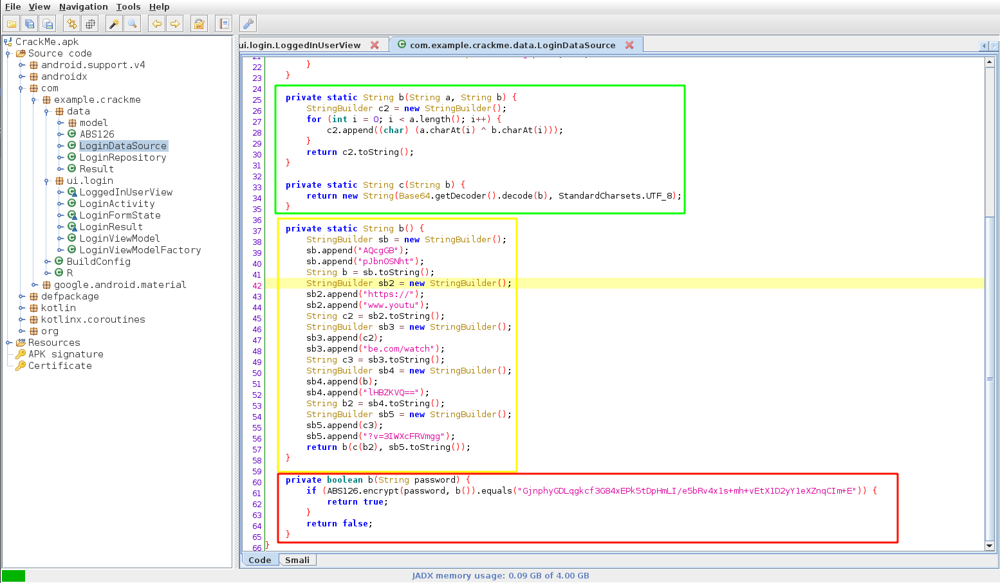
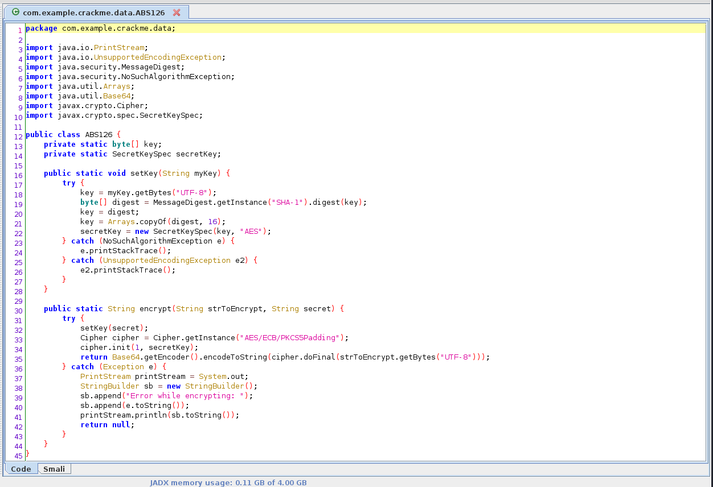

MCTF2021 - Android - KeepassDroid
MidnightflagCTF2021
Organisé par l’ESN’hack. La CTF c’est déroulée la nuit du 10/04/21 au 11/04/21. Grâce à ABH le pro de l’OSINT, on termine dans le TOP 10 du classement général.

TL;DR
Ce post est dédié à la résolution du challenge KeepassDroid.
Basiquement pas besoin d’installer l’application des outils décompilant les apk sont nombreux.
Voilà ma démarche de réfléxion pour résoudre ce challenge.
- Décompilation via
jadx-gui - Compréhension de l’algo et identification du problème
- Implémentation en python
Task
J’ai créé ma propre application pour android, je vous mets au défi de trouver le mot de passe !
Décompilation
La décompilation se fait facilement avec jadx
La classe com.example.crackme.data.LoginDataSorce contient les éléments permettant de dériver le mot de passe.

- En rouge, la partie qui va vérifier si le mot de passe entré est le bon
- En jaune, fonction qui est utiliser lors de la vérification du mot de passe et qui permet de calculer le secret
- En vert, la partie qui va être utiliser pour générer le secret.
La classe com.example.crackme.data.ABS126 contient quant à l’algorithme de chiffrement utiliser.

Compréhension de l’algorithme
Après 5 minutes de lecture de code on a :
- str1 = AQcgGBpJbn0SNhtlHBZKVQ==
- str2 = https://www.youtube.com/watch?v=3IWXcFRVmgg
Le secret est le XOR de str1 (decodé en base64) avec str2.
Le secret est hashé avec la fonction sha1, et on garde uniquement les 16 premiers bytes (=32 caractère si sha1 est hexadécimale)
Le secret est utilisé comme clé pour chiffrer via AES ECB
Implémentation
from Crypto.Cipher import AES
from base64 import b64decode
from hashlib import sha1
xor = lambda b1, b2: b"".join([bytes([b1[i]^b2[i] for i in range(len(b1))])])
str1 = b"AQcgGBpJbn0SNhtlHBZKVQ=="
str2 = b"https://www.youtube.com/watch?v=3IWXcFRVmgg"
flag = b"GjnphyGDLqgkcf3G84xEPk5tDpHmLI/e5bRv4x1s+mh+vEtX1D2yY1eXZnqCIm+E"
sha1 = sha1(xor(b64decode(str1), str2)).digest()
aes = AES.new(sha1[:16], AES.MODE_ECB)
flag = aes.decrypt(b64decode(flag))
print(flag.decode())
Flag
MCTF{4ndr01d_b4s1c_cr4ck_m3_ch4ll3ng3_!!}